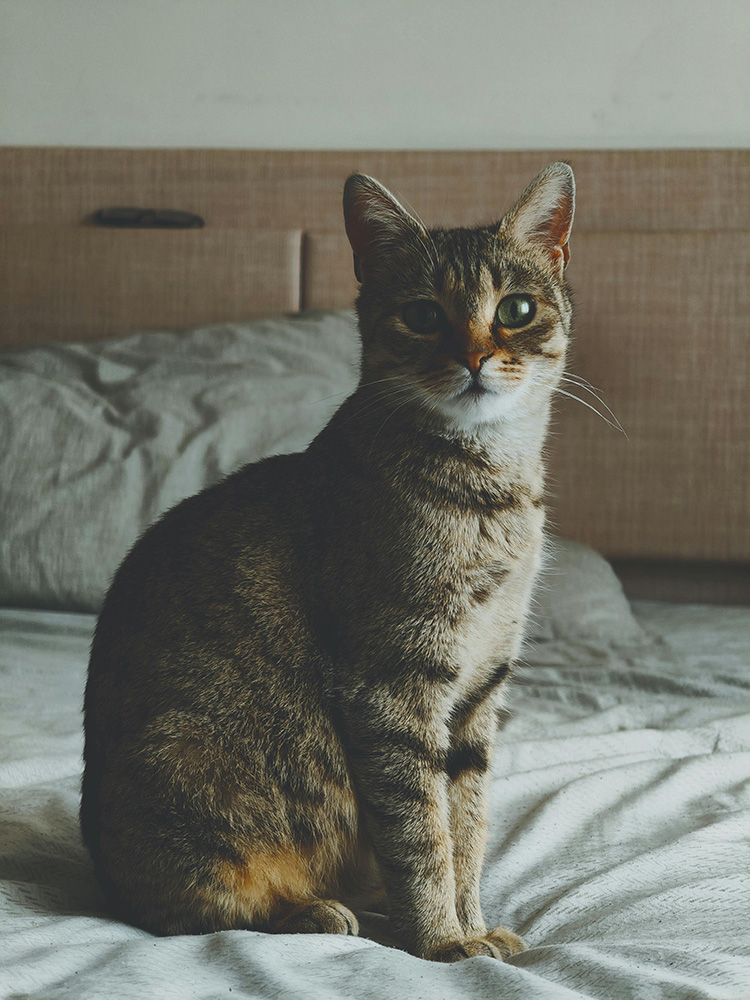

Par mani
Sveiki! Es esmu digitālā māksliniece, kas strādā ar interaktīvajiem medijiem un tehnoloģijām. Mani darbi pēta robežu starp fizisko un digitālo telpu.
Studiju laikā atklāju aizraušanos ar 3D vidi un reāllaika renderēšanu. Kopš tā laika esmu veidojusi dažādus projektus – no neliелām web animācijām līdz pilnvērtīgām VR pieredzēm.
Mani interesē stāstījuma veidošana caur vizuālo valodu un to, kā tehnoloģijas var radīt emocionālu saikni ar skatītāju. Eksperimentēju ar procesiem, materiāliem un rīkiem, meklējot jaunas izteiksmes formas.
Izglītība
- Maģistra grāds Jauno mediju mākslā, 2025
- Bakalaura grāds Vizuālajā mākslā, 2023
Prasmes
Unity & C#
Blender
p5.js
TouchDesigner
After Effects
WebGL
Sazinies ar mani
E-pasts: example@email.com
Atrašanās vieta: Rīga, Latvija